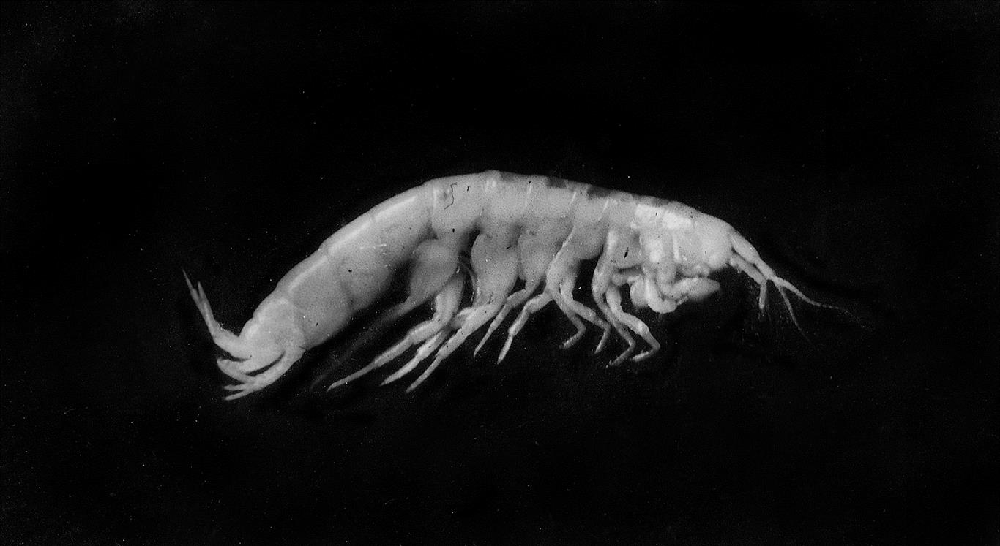
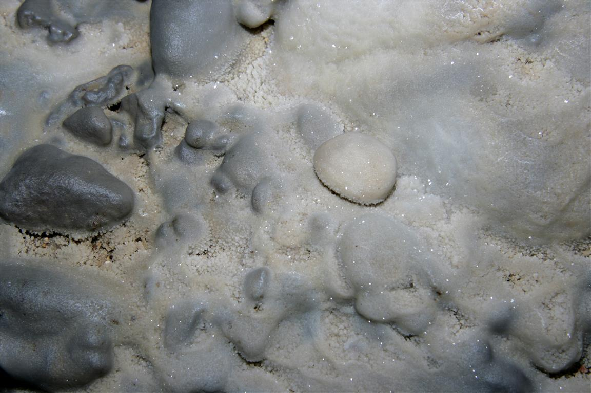
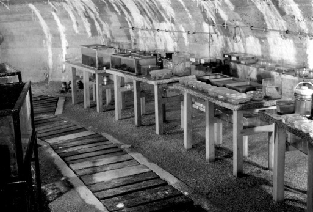
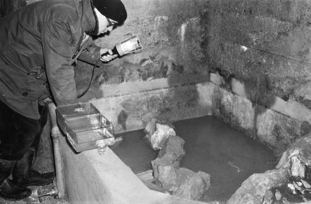
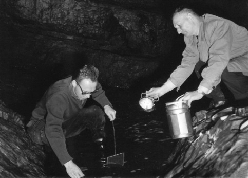
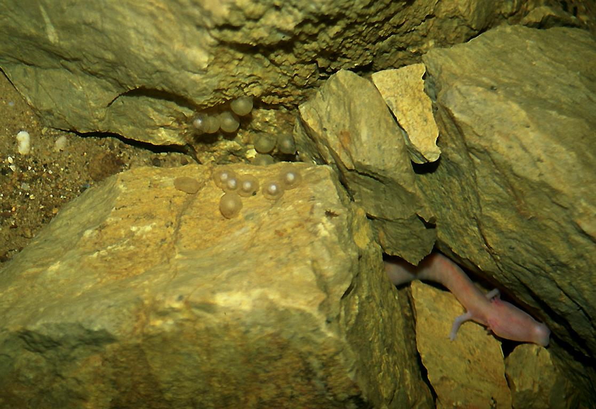
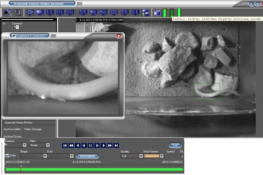

Jama, ki je postala laboratorij
Tular je naravna jama, ki jo je v pleistocenskem konglomeratu reke Save pod Stražiščem v Kranju izdolbel droben potoček. Podobne kraške pojave najdemo tudi po bližnji okolici, najlepše pa ob robu konglomeratnih teras zavarovanega naravnega parka Udin boršt.


Leta 1689 jo je opisal znameniti J. V. Valvasor v Slavi vojvodine Kranjske. Jama je naravovarstveno pomembna kot klasična lokaliteta jamskega hrošča Anophthalmus miklitzi staudacheri MÜLLER, 1923. V potoku, ki teče iz jame Tular, pa živi slepa jamska postranica Niphargus ilidzensis slovenicus S. KARAMAN, 1932. V Katastru jam Jamarske zveze Slovenije je registrirana pod katastrsko številko 369, načrt je narisal koleopterolog Egon Pretner (arhiv). Med drugo svetovno vojno, leta 1944, so večji del jame obzidali v protiletalsko zaklonišče za bližnjo tovarno.
Raziskovanje od leta 1960
Speleobiolog Marko Aljančič (1933–2007) je leta 1960 zakloniščni del jame preuredil v jamski laboratorij in v njem naselil kolonijo človeške ribice (Proteus anguinus). Jamski laboratorij Tular je edini tovrstni dolgoročni laboratorij v Sloveniji, poleg Podzemeljskega laboratorija v Moulisu (arhiv) v francoskih Pirenejih pa tudi edini kraj, kjer se človeške ribice razmnožujejo izven svojega naravnega habitata. Od leta 2002 v Jamskem laboratoriju Tular raziskujemo majhno kolonijo črne človeške ribice, izjemno redke temno obarvane podvrste (Proteus anguinus parkelj).



Opazovanje življenja v temi
V Jamskem laboratoriju Tular živali preučujemo le z opazovanjem, na način, ki jih ne vznemirja ali poškoduje. Tu poskušamo poiskati odgovore na zanimiva vprašanja iz življenja človeške ribice, ki ga v njihovem težko dostopnem podzemeljskem okolju težko raziskujemo. Zanima nas, kako človeške ribice lovijo plen, kako te živali med seboj komunicirajo, kako zaznavajo svojo okolico, pa tudi, kako se upirajo poplavam ter kakšna je njihova usoda, ko jih odplakne na površje – skratka, kako so se prilagodile na svoje jamsko okolje. Ugotovitve so ključne za uspešno varstvo človeške ribice v naravi. Na terenu, vzdolž Dinarskega krasa, zbiramo podatke o razširjenosti človeške ribice, opazujemo njeno vêdenje, predvsem pa spremljamo ogroženost kraškega podzemeljskega habitata. Posebno pozornost posvečamo tudi preučevanju zgodovine raziskovanja človeške ribice. Tako smo zbrali eno najtemeljitejših knjižnic o tej živalski vrsti.



Zatočišče in varstvo
Jamski laboratorij služi tudi kot zatočišče za poškodovane človeške ribice, ki jih poplave občasno izplavijo iz podzemlja. Od leta 2008 smo preučili več kot 25 primerov iz Slovenije ter Bosne in Hercegovine, 20 živali smo rešili in jih vrnili v njihovo izvorno populacijo.
Pomemben del aktivnosti Jamskega laboratorija Tular je usmerjen v varstvo človeške ribice in njenega podzemeljskega habitata. To bo lahko uspešno le ob stalnem izobraževanju javnosti, usmerjenem v verodostojno promocijo človeške ribice kot enega najpomembnejših simbolov svetovne naravne dediščine ter raznovrstnosti jamskega živalstva, s poudarkom na varstvu podzemne vode.
Izvirni zapisi o projektih in laboratoriju. Datumi in zgodovinsko izrazje so ohranjeni.